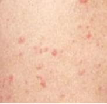
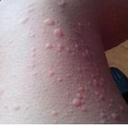
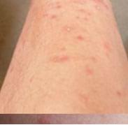
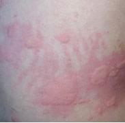
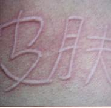
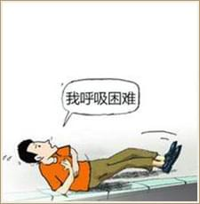
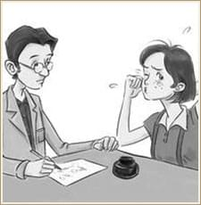
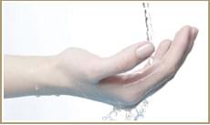
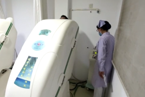

荨麻疹会传染吗？
――中医祛疹止痒一身轻
皮肤瘙痒难耐，心情烦躁子怎么办？出现荨麻疹风团块，一发不可收拾？私下用药，治疗效果不理想？还有，荨麻疹会不会传染？接下来贵阳中医皮肤病医院专家吕绍先主任为您解答。
-
原中国人民解放军第四十四医院皮肤科主任、贵阳市第三人民医院皮肤科主任，中华医学会皮肤科学会委员。
 运用中西医结合治疗皮
运用中西医结合治疗皮
炎、湿疹、荨麻疹、雀斑、腋臭、灰指甲、手足癣、体股癣、疱疹、扁平疣。
荨麻疹会传染吗？引起荨麻疹病因有哪些？
荨麻疹的病因非常复杂，约3/4的患者找不到原因，特别是慢性寻麻疹。常见原因主要有：食物及食物添加剂、吸入物、感染、药物、冷热、日光、昆虫叮咬、精神因素和内分泌改变、遗传因素等。就引发荨麻疹的病因而言，荨麻疹一般不会传染给他人。但是荨麻疹的危害大，严重时甚至会危及生命安全，一定要引起重视！
荨麻疹的症状
一般先有皮肤瘙痒，随即出现风团，呈鲜红色或苍白色、皮肤色，少数患者有水肿性红斑。部分患者可伴有恶心、呕吐、头痛、头胀、腹痛、腹泻，严重患者还可有胸闷、面色苍白、心率加速、脉搏细弱、血压下降、呼吸短促等全身症状。
荨麻疹种类很多，看看你属于哪种荨麻疹？
-
寒冷性荨麻疹一般皮肤在暴露于冷风、冷水等后出现。
-
急性荨麻疹大多数与进食（如海鲜、高蛋白饮食）有关。
-
胆碱能性荨麻疹多发生于青年期，常常在天气冷热交替季节发生。
-
日光性荨麻疹主要表现为皮肤暴露于日光数秒至数分钟后出现。以女性多发。
-
血清病荨麻疹是由于药物、疫苗或异体血引起。严重者可导致心脏和肾脏损害。
-
人工性荨麻疹亦称皮肤划痕症，用手搔抓或用钝器划过皮肤后出现。
荨麻疹真的只是“皮肤”病？NO！
- 
-
一危害生命
不要对荨麻疹不以为然，如果荨麻疹的位置是长在要害部位，如发生在呼吸道的喉头和支气管处，它会导致反复发作的喉头水肿，严重者呼吸困难至窒息，危及生命安全。
-
二引发其他并发症
荨麻疹可以诱发内脏等病（如自身免疫性甲亢），甚至还会导致细胞恶变。荨麻疹孕妇患者还可以导致免疫性不育及流产。
- 
-
三影响生活工作
荨麻疹随着病情的加重，瘙痒反复、多部位发作等严重影响患者们的正常生活和工作。因此荨麻疹必须及早发现及早治疗，而不是听之任之。
荨麻疹为何反反复复？
-
一滥用激素软膏药物止痒
很多的患者都是因为药物的使用不当导致疾病加重的。
- 
-
二热敷止痒
一般人会用热水进行烫洗皮肤瘙痒的患部，但是一洗过后反而会加重皮肤瘙痒的程度。
-
三过度搔抓瘙痒
切勿为图一时痛快，承受不了而用力搔抓，结果越抓越痒，越痒越抓，形成恶性循环。
-
四饮食不节
饮食不节是由于食用各种刺激性食品，而诱发荨麻疹，或使其加重。过敏体质者，更需要谨慎！
【荨麻疹治疗】中药熏蒸经络免疫疗法
从根源上根治荨麻疹
-
配制汉方中药进行调理，改变患者的过敏体质，增强患者免疫力；
达到标本兼治效果，防止复发。
-
结合中药熏蒸治疗系统，将中药煎煮成液体，直接熏蒸荨麻疹患处，使药物直接渗透进皮肤，消除瘙痒、水肿和风团疹块；
避免患者产生药物依赖性，口服西药激素及外用膏剂所导致的毒副作用。
-
艾灸治疗，达到舒经活络，舒缓皮肤和黏膜血管，彻底消除水肿、瘙痒、风团等症状；
见效快，快速解决瘙、风团症状，达到治愈荨麻疹，防止复发的效果。
中医辩证施治荨麻疹,一月治愈多年顽疾
- 
邓先生来自贵州习水，患荨麻疹多年，全身起大片大片的风团，奇痒难忍。此前，他曾在家乡以及上海某些有名的大医院的皮肤病专科医院治疗过，吃过各种各样的中药和西药，均不见效果。由于奇痒难耐，甚至用过民间偏方，也未见成效。
直到张先生求医来到贵阳中医皮肤病医院，其主治医生通过详细检查，分析了他以前治疗失败的原因，制定了对症治疗方案“中药熏蒸经络免疫疗法”。
令人称奇的是，这次以中医治疗为主，仅用一个月就治愈了邓先生的顽症。